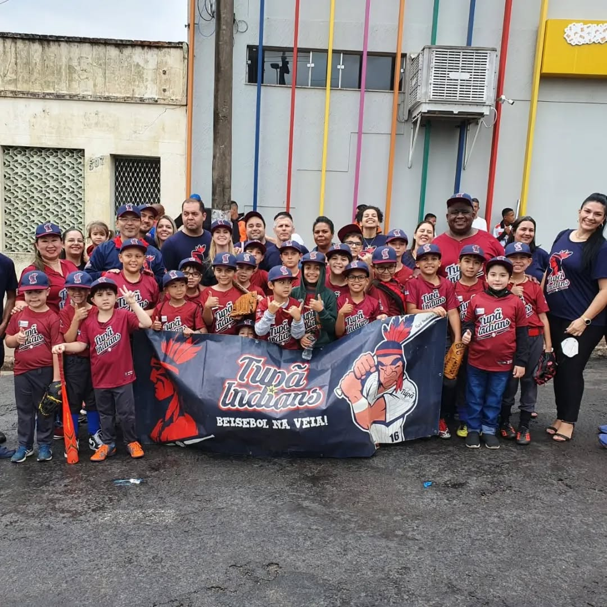

Departamento de Baseball
O Esporte que Constrói Laços
O baseball — ou Yakyū, como é chamado no Japão — é muito mais do que um esporte em nosso Kaikan. É um elo entre gerações, um símbolo de disciplina e amizade que atravessa o tempo. Aqui, cada treino vai além das bases: cultivamos valores que moldam o caráter — respeito, determinação e espírito de equipe.
Mais que um Jogo, um Caminho
Inspirado no estilo japonês, nosso baseball é guiado pelos princípios do doryoku (esforço), kiai (coragem) e reigi (respeito). Antes de cada treino, reverenciamos o campo — um gesto que simboliza gratidão, humildade e conexão com o esporte. Cada lance é um aprendizado, cada treino é uma lição de vida.
Categorias
Nosso departamento recebe atletas de todas as faixas etárias, sempre com foco no desenvolvimento técnico e humano:
- Infantil (T-Ball – 6 a 8 anos): O primeiro contato com o baseball. Por meio de brincadeiras e atividades leves, as crianças aprendem coordenação, socialização e o prazer de jogar em equipe.
- Juvenil (9 a 12 anos): Fase de aperfeiçoamento técnico e compreensão tática. Aqui, os jovens começam a sentir o verdadeiro espírito competitivo do esporte e a importância da união.
Estrutura e Treinamento
Contamos com um campo oficial de baseball, mantido com o mesmo cuidado que dedicamos a nossos atletas. Os treinos são conduzidos por técnicos experientes e voluntários apaixonados, que combinam técnica, disciplina e entusiasmo para formar jogadores completos — dentro e fora do campo.
Horários dos Treinos
Nossas turmas são divididas por faixa etária para garantir um aprendizado seguro e adequado para cada aluno.
- T-Ball Infantil (6 a 8 anos): Quartas-feiras, 16:00 - 18:00 e Sábados, 09:00 - 11:00
- Beisebol/Softbol Juvenil (9 a 12 anos): Terças e Quintas, 16:00 - 18:00 e Sábados, 09:00 - 11:00
Entre em contato conosco e descubra qual turma melhor se encaixa para você ou seu filho. Todos são bem-vindos — dos iniciantes aos veteranos.
Entre em Campo com a Gente!
A paixão pelo baseball começa no primeiro arremesso. Agende um treino experimental gratuito e viva a experiência de jogar com propósito, tradição e espírito de equipe. Junte-se ao nosso time e faça parte dessa história!
Agendar Treino